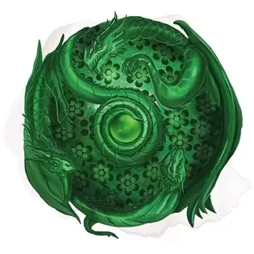

Око Дракона
Orb of Dragonkind
Чудесный предмет, артефакт (требуется настройка)

Много столетий назад в мире Кринн эльфы и люди развязали ужасную войну со злыми драконами. Когда мир был уже практически обречён, волшебники Башен Высшего Волшебства объединились и с помощью самой могущественной магии создали пять Очей Драконов, чтобы победить своих врагов. Каждой из башен досталось своё Око, и с их помощью удалось одержать победу над драконами. Волшебники приманивали к себе драконов и уничтожали их мощной магией.
Когда позже Башни Высшего Волшебства пали, Очи либо были уничтожены, либо пропали, и считается, что осталось только три таких Ока. Их магия за столетия изменилась, и, несмотря на то, что они по-прежнему могут приманивать драконов, теперь они могут оказывать и другое воздействие.
Каждое Око содержит сущность злого дракона, которая сопротивляется попыткам использовать её магию. Те, кто слабы духом, рискуют стать рабами Ока.
Око это гравированный хрустальный шар примерно 25 сантиметров диаметром. Когда его используют, он увеличивается диаметром до полуметра и в нём начинает клубиться туман.
Будучи настроенным на Око, вы можете действием заглянуть в его глубины и произнести командное слово. Затем вы совершаете проверку Харизмы Сл 15. В случае успеха вы контролируете Око всё время, пока настроены на него. При провале вы становитесь очарованы Оком, пока вы настроены на него.
Пока вы очарованы Оком, вы не можете добровольно окончить настройку на него, и Око может неограниченно накладывать на вас внушение [suggestion] (Сл спасброска 18), побуждая вас совершать злые поступки. Сущность дракона в Оке может желать разного: уничтожения конкретного народа, освобождения из Ока, распространения страданий по миру, распространения поклонения Такхизис (имя Тиамат на Кринне), или чего-то ещё, на усмотрение Мастера.
Случайные свойства.Око Дракона обладает несколькими свойствами, определяемыми случайным образом:
- 2 малых положительных свойства
- 1 малое отрицательное свойство
- 1 основное отрицательное свойство
Заклинания. У Ока есть 7 зарядов, и оно восстанавливает 1к4 + 3 заряда на рассвете. Если вы контролируете Око, вы можете действием потратить 1 или несколько зарядов, чтобы наложить им одно из следующих заклинаний (Сл спасброска 18): дневной свет [daylight] (1 заряд), защита от смерти [death ward] (2 заряда), лечение ран [cure wounds] (версия 5 уровня, 3 заряда) или наблюдение [scrying] (3 заряда).
Вы также можете действием наложить Оком заклинание обнаружение магии [detect magic], не тратя заряды.
Зов драконов. Если вы контролируете Око, вы можете действием заставить артефакт испустить телепатический зов, распространяющийся на 40 миль. Злые драконы в пределах этой дистанции вынуждены лететь к Оку кратчайшим маршрутом. Божества-драконы, такие как Тиамат, не попадают под действие этого зова. Прилетевшие драконы могут быть враждебны к вам, за то, что вы принудили их. Использовав это свойство, вы не можете повторно использовать его 1 час.
Уничтожение Ока. Око Дракона выглядит хрупким, но оно не подвержено практически никакому урону, включая атаки и дыхание драконов. Однако Око можно уничтожить заклинанием распад [disintegrate] или одним попаданием магического оружия +3.